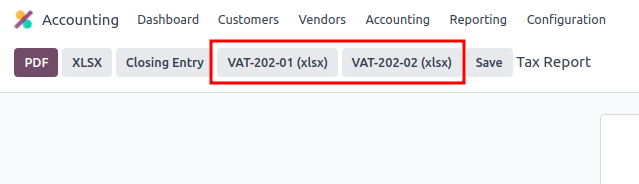
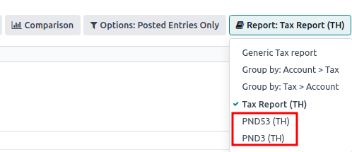

Tailandia¶
Configuración¶
Instale el paquete de localización de 🇹🇭 Tailandia para obtener todas las funciones de la localización tailandesa:
Nombre |
Nombre técnico |
Descripción |
|---|---|---|
Tailandia - Contabilidad |
|
Paquete de localización fiscal predeterminado |
Tailandia - Reportes contables |
|
Reportes contables específicos del país |
Plan de cuentas e impuestos¶
El paquete de localización fiscal de Odoo para Tailandia incluye los siguientes impuestos:
IVA del 7%
Exención de IVA
Retención de impuesto
Retención de impuesto sobre la renta
Informe de impuestos¶
Odoo le permite a los usuarios generar archivos de Excel para enviar el IVA al Departamento de Hacienda de Tailandia.
Reporte de impuestos de ventas y compra¶
Para generar el reporte de impuestos de ventas y compra, vaya a . Seleccione una hora o un rango de tiempo específico para el reporte y haga clic en VAT-202-01 (xlsx) para los impuestos de compra y en VAT-202-02 (xlsx) para los de ventas.
Reporte de retención de impuestos PND¶
Los datos del reporte PND muestran en resumen las cantidades de la retención de impuestos sobre sociedades (nacional) aplicables sobre las facturas de proveedor en los reportes de impuestos PND53 (TH) y PND3 (TH). Se instala de manera predeterminada con la localización tailandesa.
Nota
La retención de impuestos sobre sociedades (nacional) es el impuesto que se aplica en caso de que la empresa retenga el impuesto sobre los servicios “Personales (PND3)” o “Empresariales (PND53)” prestados como el alquiler, la contratación, el seguro, la cuota de administración, consultoría, etc.
El reporte de impuestos PND le permite a los usuarios generar un archivo CSV para las facturas y subirlas a la aplicación de llenado electrónico RDprep para Tailandia.
Para generar un archivo PND CSV, vaya a , seleccione una hora específica o un rango de tiempo para el reporte de impuesto y haga clic en PND3 o PND53.
Esto genera los archivos Reporte de impuestos PND3.csv y Reporte de impuestos PND53.csv que enlistan todas las líneas de facturas de proveedor con las retenciones fiscales aplicables.
Advertencia
Odoo no puede generar directamente el reporte PND o PDF o el certificado de retenciones fiscales. Los archivos Reporte de impuestos PND3.csv y Reporte de impuestos PND53.csv generados deben exportarse a una herramienta externa para convertirlos a un reporte PND de retenciones o a un archivo PDF.
Factura impositiva¶
El reporte PDF de factura impositiva se puede generar desde Odoo a través del módulo Facturación. Los usuarios tienen la opción de imprimir los reportes en PDF para facturas normales y facturas impositivas. Para imprimir las facturas impositivas, haga clic en Imprimir facturas en Odoo. Las facturas normales se pueden imprimir como facturas comerciales al hacer clic en el .

Ajustes de la sede/número de filial¶
Puede poner la sede o el número de sucursal de una empresa en la aplicación Contactos. Un vez dentro, abra el formulario del contacto de la empresa y en la pestaña Ventas y Compra:
SI el contacto es una filial, introduzca el Número de filial en el campo ID de la empresa.
Si el contacto es una Sede, deje el campo ID de la empresa en blanco.

Truco
Estos datos se usan en el reporte PDF de factura impositiva y en la exportación del PND reporte de impuesto.